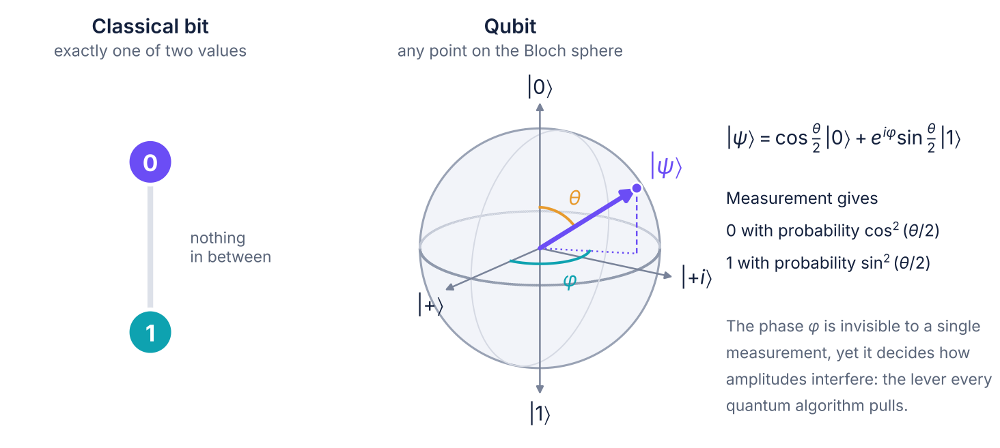
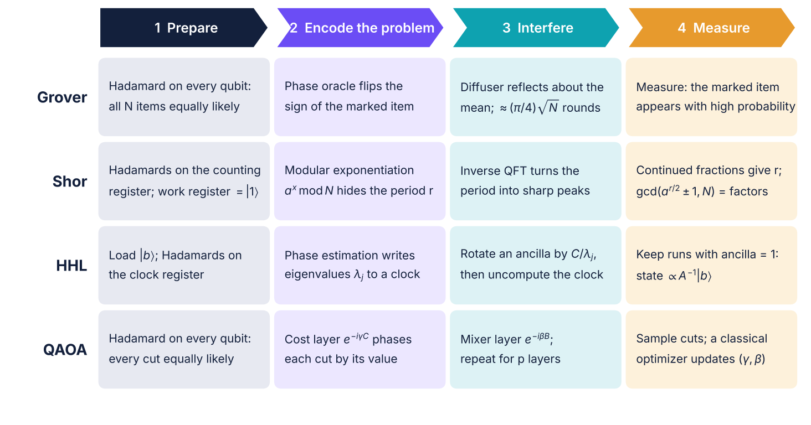

ในบทความนี้
In this post
Start here — programmer ต้องเปลี่ยนมุมมองอะไร
ดาวน์โหลดประกอบซีรีส์
คู่มือฉบับเต็ม (PDF ภาษาอังกฤษ · 43 หน้า · 4.1 MB)
โค้ด ตัวอย่าง และแบบฝึก (ZIP)
บทที่ 1/7 · ดัดแปลงจากเอกสาร Quantum Algorithms for Programmers, Edition 1.0 หน้า 5–8 พร้อมโค้ดและคำอธิบายที่ตรวจซ้ำสำหรับเว็บ
ซีรีส์ Quantum Algorithms for Programmers นี้พาจาก Python ไปสู่สี่อัลกอริทึมที่มักถูกอ้างว่าเร็วกว่า classical computer แล้วกลับมาถามคำถามที่วิศวกรต้องตอบให้ได้ว่า “เร็วกว่าในการทำงานเดียวกันจริงหรือไม่” บทความดัดแปลงจาก Technical Guide ฉบับ November 2026 ของผู้เขียน โดยแยกเป็นเจ็ดบทเรียนพร้อมโค้ดที่รันได้
พื้นฐานที่ใช้คือ function, array, complex number และ Big-O ไม่ต้องเคยเรียน quantum mechanics เราจะใช้ Qiskit บนเครื่องตัวเอง ทุกตัวอย่างเป็น simulation ขนาดเล็ก ไม่ต้องมี cloud account ผลที่ได้พิสูจน์ความเข้าใจของอัลกอริทึม ส่วนการอ้างความได้เปรียบต้องมีการวัดอีกแบบหนึ่ง
ถ้าเคยคิดว่า quantum computer คือ CPU ที่วนทุกคำตอบพร้อมกัน ให้เริ่มจากข้อจำกัดของการอ่านผล: register มี n qubits แต่ measurement หนึ่งครั้งให้ bit string เพียง n bits งานของโปรแกรมคือจัด amplitude ให้คำตอบที่ต้องการมีโอกาสปรากฏสูงขึ้น
State — ตัวเลขที่อ่านตรง ๆ ไม่ได้
pure qubit เขียนเป็น |ψ⟩ = α|0⟩ + β|1⟩ โดย α และ β เป็น complex number และ |α|² + |β|² = 1 เมื่อวัดใน computational basis จะได้ 0 ด้วยโอกาส |α|² และ 1 ด้วยโอกาส |β|² หลังวัด state จะสอดคล้องกับผลที่อ่านได้


Bloch sphere ในภาพแทน pure state ของ qubit เดียว มุม θ กำหนดสัดส่วนโอกาส ส่วน φ เป็น relative phase ที่มีผลเมื่อ state ถูกนำไป interfere กับ operation ถัดไป การมีโอกาส 50:50 จึงบอก state ทั้งหมดไม่ได้ |+⟩ และ |−⟩ ให้โอกาสเท่ากันเมื่อวัดทันที แต่ตอบสนองต่อ gate ถัดไปต่างกัน
สำหรับ n qubits เราเขียน statevector ที่มี 2n amplitudes ได้บน simulator แต่ memory โตเป็น exponential ด้วย ตัวเลขที่ Statevector เปิดให้ดูเป็นสิทธิ์ของผู้จำลองทาง classical เครื่อง quantum จริงไม่ได้มี API สำหรับอ่าน amplitude ทุกตัวจากสำเนาเดียว
อ้างอิง: [1]
Interference — ทดลอง H·H กับ H·Z·H
Hadamard gate H เปลี่ยน |0⟩ เป็น |+⟩ = (|0⟩ + |1⟩)/√2 หากทำ H อีกครั้งจะกลับไป |0⟩ แต่ถ้าแทรก Z ก่อน H ตัวสุดท้าย Z จะกลับเครื่องหมายของ amplitude ฝั่ง |1⟩ ทำให้ผลสุดท้ายเป็น |1⟩ ทั้งสองเส้นทางยังเป็น 50:50 ก่อน H ตัวสุดท้าย
ส่วนโค้ดสำหรับอ่านแนวคิด ใช้ไฟล์เต็มพร้อม imports จาก companion และคำสั่งใน Run & explore ด้านล่าง
def interference(phase_flip=False):
qc = QuantumCircuit(1)
qc.h(0)
if phase_flip:
qc.z(0)
before = Statevector(qc).probabilities()
qc.h(0)
return before, Statevector(qc).probabilities()
def bell():
qc = QuantumCircuit(2)
qc.h(0)
qc.cx(0, 1)
return Statevector(qc).probabilities()อ่านโค้ดโดยมองว่า gate เปลี่ยน state ไม่ได้เปลี่ยน probability โดยตรง qc.z(0) เปลี่ยน phase แล้ว qc.h(0) จึงเปลี่ยน phase ให้กลายเป็นความต่างที่วัดเห็นได้ หากตัด H ตัวสุดท้ายออก เราจะมองไม่เห็นผลของ Z จาก histogram ใน basis นี้
นี่คือแกนของ interference: เส้นทางที่ลงท้ายด้วย outcome เดียวกันรวมกันด้วย amplitude ก่อนยกกำลังสอง ไม่ใช่บวก probability ของทุกเส้นทางตั้งแต่ต้น จึงมีทั้ง reinforcement และ cancellation
Z=False: before final H [0.5 0.5]; after [1. 0.]
Z=True: before final H [0.5 0.5]; after [0. 1.]
Bell probabilities [00,01,10,11]: [0.5 0. 0. 0.5]Registers — superposition และ entanglement
Superposition หมายถึงมี amplitude ไม่เป็นศูนย์บนหลาย basis states เช่น H ทุก qubit ทำให้ทุก bit string มีโอกาสเท่ากัน แต่หากวัดทันทีจะได้เพียง random string ยังไม่มีการแก้โจทย์ใดเกิดขึ้น
Entanglement หมายถึง joint state แยกเป็น state ราย qubit ไม่ได้ ตัวอย่าง bell() ใช้ H บน qubit 0 แล้ว controlled-X ไปยัง qubit 1 ได้ (|00⟩ + |11⟩)/√2 แต่ละ qubit ดูสุ่มเมื่ออ่านเดี่ยว ๆ ขณะที่ผลทั้งคู่สัมพันธ์กันเสมอ การส่งข้อมูลเร็วกว่าแสงไม่ได้ตามมาจาก correlation นี้
Qiskit เก็บ qubit 0 เป็น least significant bit ใน integer และเป็นอักษรขวาสุดของ count string ตาม mapping ที่เราใช้ เช่น 1011 คือ q3=1, q2=0, q1=1, q0=1 อย่าสลับตำแหน่งใน oracle เพราะบาง bit string เป็น palindrome จนบั๊กดูเหมือนไม่เกิด
Algorithm map — สี่ขั้นที่ใช้ซ้ำ


ทั้งสี่อัลกอริทึมมีรูปแบบร่วมกัน: prepare state → encode problem → interfere → measure และทำงานต่อด้วย classical code สำหรับ Grover เรากลับ phase ของคำตอบแล้วขยาย amplitude สำหรับ Shor เรา encode period แล้วให้ inverse QFT สร้าง peak สำหรับ HHL เราใช้ eigenvalue เพื่อสร้าง amplitude ใหม่ ส่วน QAOA ให้ classical optimizer ปรับมุมของ circuit ซ้ำ
| Classical habit | Quantum programming habit |
|---|---|
| print intermediate value | ใช้ simulator ตรวจ state หรือออกแบบ measurement เพิ่ม |
| loop มากขึ้นมักได้ข้อมูลเพิ่ม | gate เพิ่มอาจหมุน state เลยคำตอบหรือสะสม noise |
| input/output คือ array | ต้องระบุ state preparation และ observable ที่อ่าน |
| นับ runtime เฉพาะ function | รวม compilation, shots, retries และ classical work |
บทถัดไปจะใช้ Grover ทำให้เห็นขั้น encode และ interfere แยกกันชัดเจน เราจะดู amplitude ติดลบ โอกาสที่สูงขึ้น และการรันมากเกินจนผลแย่ลง
อ้างอิง: [3]
Run & explore — ลงมือทดลอง
Complete code · FoundationsTests · Exercise · Setup & troubleshooting
ใช้ Python 3.12–3.13 และ virtual environment ตาม README ไม่ต้องใช้ API key หรือ quantum hardware หากยังไม่ติดตั้งให้ทำตามตอน 1 หรือ README
git clone https://github.com/Anirach/quantum-algorithms-for-programmers.git
cd quantum-algorithms-for-programmers
git checkout 0ad89867571639641f0b9fab28391e28dc584670
python3 -m venv .venv
source .venv/bin/activate
python -m pip install -r requirements.txt
python foundations.py
python -m unittest discover -s tests -p test_algorithms.py -k FoundationsTests -vลองต่อด้วยตัวเอง
เปลี่ยน Z เป็น phase gate P(π/2) แล้วเปรียบเทียบ probability ก่อนและหลัง H ตัวสุดท้าย จากนั้นอธิบายว่าเหตุใด Bell distribution จึงต่างจาก qubit สองตัวที่โยนเหรียญแยกกัน
Sources & verification — แหล่งอ้างอิง
Primary sources และขอบเขตการตรวจ
เอกสารผู้เขียนเป็นต้นทางของคำอธิบายและภาพที่ระบุ ส่วนลิงก์ข้างล่างเป็นเอกสารวิจัยและมาตรฐานที่ใช้ตรวจข้ออ้าง โค้ดรันซ้ำบน Python 3.13, Qiskit 2.6.2, Aer 0.18.4, NumPy 2.5.5 และ SciPy 1.18.1 วันที่ 24 November 2026 ผลทั้งหมดเป็น local simulation หรือค่าตัวอย่างที่ระบุ ไม่มีการรัน hardware
Start here: change the programming model
Download the series resources
Complete guide (English PDF · 43 pages · 4.1 MB)
Code, examples and exercises (ZIP)
Part 1/7. Adapted from Quantum Algorithms for Programmers, Edition 1.0, pp. 5–8, with web explanations and rerun code.
This Quantum Algorithms for Programmers series moves from Python to four famous quantum algorithms, then returns to the engineering question: faster at exactly what task? It adapts the author's November 2026 Technical Guide into seven lessons with executable code.
You need functions, arrays, complex numbers and Big-O notation. No previous quantum mechanics is assumed. We use Qiskit locally, with small simulations and no cloud account. These experiments check how algorithms work; practical advantage requires a different experiment.
Start with the output constraint. A register has n qubits, but one computational-basis measurement returns just an n-bit string. You cannot inspect every candidate encoded in the state. Your program must arrange amplitudes so that useful answers become likely.
State: numbers you cannot simply print on hardware
A pure qubit is |ψ⟩ = α|0⟩ + β|1⟩, with complex α and β and normalization |α|² + |β|² = 1. Computational-basis measurement returns 0 with probability |α|² and 1 with probability |β|². After measurement, the state is consistent with that observed outcome.
The Bloch sphere represents one pure qubit. The angle θ sets the measurement probabilities; φ describes a relative phase that matters when later operations interfere. A 50:50 distribution does not specify the state. The states |+⟩ and |−⟩ look identical if measured immediately, yet respond differently to the next gate.
An n-qubit statevector has 2n amplitudes. A classical simulator can print them, at an exponentially growing memory cost. That debugging access belongs to the simulator. A quantum device does not expose every amplitude from one copy of its state.
Sources: [1]
Interference: compare H–H with H–Z–H
The Hadamard gate H maps |0⟩ to |+⟩ = (|0⟩ + |1⟩)/√2. A second H returns |0⟩. Insert Z before the final H and the |1⟩ amplitude changes sign; the final state becomes |1⟩ instead. Immediately before that last H, both paths still have 50:50 measurement probabilities.
Implementation excerpt. Use the complete companion file with its imports and the Run and explore commands below.
def interference(phase_flip=False):
qc = QuantumCircuit(1)
qc.h(0)
if phase_flip:
qc.z(0)
before = Statevector(qc).probabilities()
qc.h(0)
return before, Statevector(qc).probabilities()
def bell():
qc = QuantumCircuit(2)
qc.h(0)
qc.cx(0, 1)
return Statevector(qc).probabilities()Read gates as transformations of the state rather than direct edits to probabilities. qc.z(0) changes phase. The final qc.h(0) converts that phase difference into an observable difference. Remove the final H and the histogram in this basis hides the effect of Z.
This is the useful part of interference: paths ending at the same outcome combine as amplitudes before taking the squared magnitude. Adding path probabilities too early loses both reinforcement and cancellation.
Z=False: before final H [0.5 0.5]; after [1. 0.]
Z=True: before final H [0.5 0.5]; after [0. 1.]
Bell probabilities [00,01,10,11]: [0.5 0. 0. 0.5]Registers: superposition and entanglement
Superposition means nonzero amplitude on several basis states. Applying H to every qubit makes all bitstrings equally likely, but immediate measurement merely produces a random string. Preparing many candidates is not yet solving the problem.
Entanglement means the joint state cannot be factored into independent qubit states. Our bell() function applies H on qubit 0 and a controlled-X onto qubit 1, preparing (|00⟩ + |11⟩)/√2. Each qubit looks random alone, while the joint outcomes agree. This correlation does not provide faster-than-light communication.
In the integer and count-string conventions used here, Qiskit treats qubit 0 as the least significant bit and the rightmost displayed character. Thus 1011 means q3=1, q2=0, q1=1, q0=1. Test an asymmetric target: a palindrome can hide a reversed oracle.
Algorithm map: four stages that recur
The recurring pattern is prepare → encode → interfere → measure, followed by classical work. Grover marks an answer through phase and amplifies its amplitude. Shor encodes a period and uses an inverse QFT to create peaks. HHL uses eigenvalues to reweight amplitudes. QAOA repeatedly changes circuit angles through a classical optimizer.
| Classical habit | Quantum programming habit |
|---|---|
| Print an intermediate value | Inspect a simulator state or design additional measurements |
| More loop iterations reveal more information | More gates may overshoot the answer or accumulate noise |
| Inputs and outputs are arrays | Specify state preparation and the observable to read |
| Time only the function | Include compilation, shots, retries and classical work |
Next, Grover makes encoding and interference visibly separate. We will track a negative amplitude, rising success probability, and the point where running longer makes the answer worse.
Sources: [3]
Run and explore
Complete code · FoundationsTests · Exercise · Setup & troubleshooting
Use Python 3.12–3.13 and the README virtual environment. No API key or quantum hardware is required. If setup is incomplete, follow part 1 or the README.
git clone https://github.com/Anirach/quantum-algorithms-for-programmers.git
cd quantum-algorithms-for-programmers
git checkout 0ad89867571639641f0b9fab28391e28dc584670
python3 -m venv .venv
source .venv/bin/activate
python -m pip install -r requirements.txt
python foundations.py
python -m unittest discover -s tests -p test_algorithms.py -k FoundationsTests -vYour experiment
Replace Z with P(π/2), compare probabilities before and after the final H, and explain why the Bell distribution differs from two independent coin flips.
Sources and verification
Primary sources and verification scope
The author’s guide supplies the credited explanations and illustrations. Linked papers and standards support the claims. Code was rerun locally on 24 November 2026 with Python 3.13, Qiskit 2.6.2, Aer 0.18.4, NumPy 2.5.5 and SciPy 1.18.1. Results are local simulations or explicitly hypothetical inputs; no quantum hardware was used.